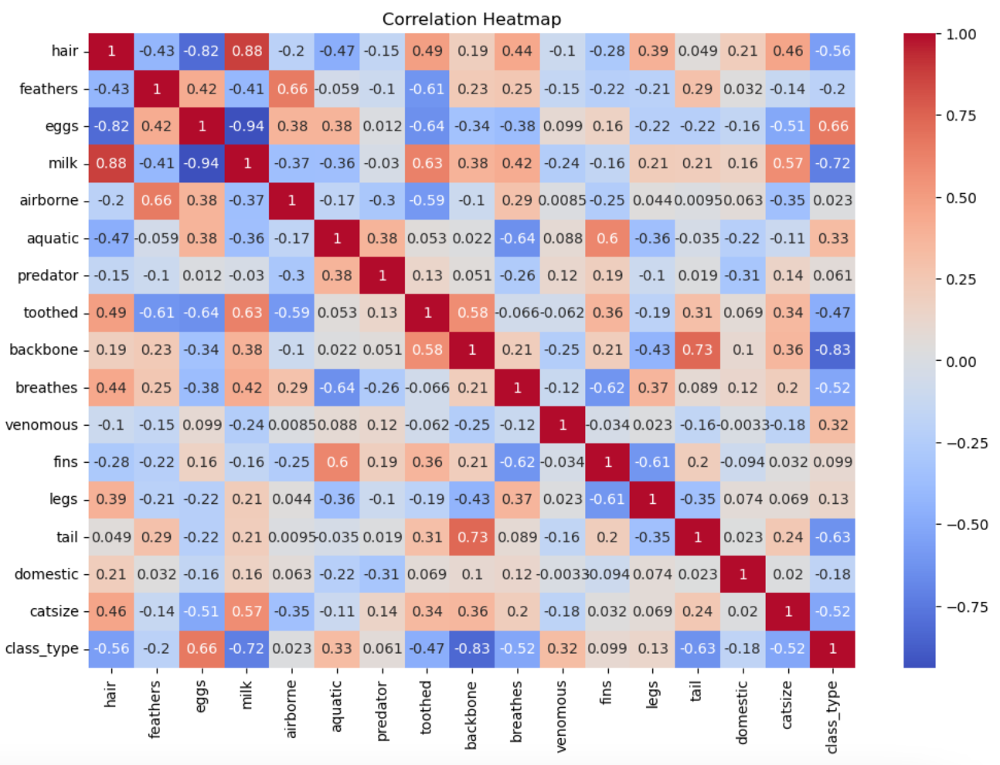
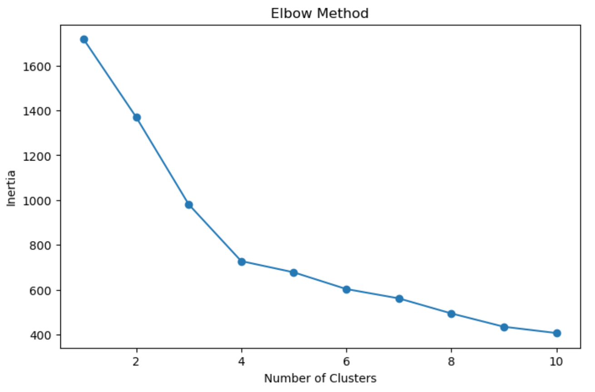
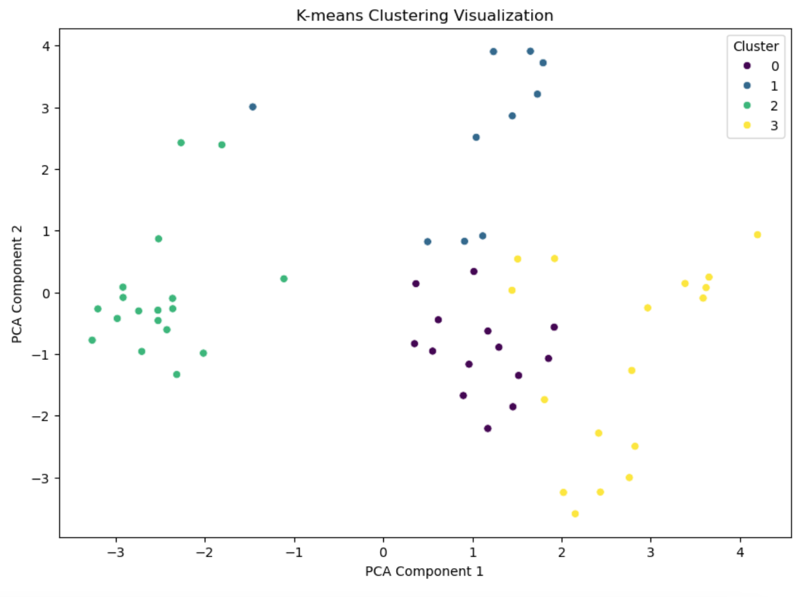

Project 4: K-means Clustering with Zoo Dataset
Introduce the Problem
For this project, we aim to categorize different animals based on their characteristics using clustering. The goal is to identify distinct groups or clusters within the animal kingdom. We seek to answer questions such as: What natural groupings exist among these animals? How can clustering help in understanding animal traits and their relationships?
What is Clustering and How Does It Work?
Clustering is an unsupervised machine learning technique that groups data points into clusters based on their similarities. The K-means algorithm is a popular clustering method, where "K" is the number of clusters predefined by the user. The algorithm works as follows:
- Initialization: Select K initial centroids randomly.
- Assignment: Assign each data point to the nearest centroid, forming K clusters.
- Update: Calculate the new centroids by taking the mean of all data points assigned to each centroid.
- Iteration: Repeat the assignment and update steps until the centroids no longer change significantly.
Introduce the Data
The dataset used is titled “Zoo Animals Classification” from Kaggle, which can be found here. The dataset includes various features of animals such as:
- animal_name: The name of the animal.
- hair, feathers, eggs, milk, airborne, aquatic, predator, toothed, backbone, breathes, venomous, fins, legs, tail, domestic, catsize, class_type: Various attributes that describe the animal.
Data Understanding/Visualization
To understand and visualize the data, we start with a quick examination of the dataset. The heatmap helps us see the relationships between different features, guiding us in understanding how they might influence our clustering model.
Pre-processing the Data
Pre-processing is crucial to ensure our data is clean and ready for modeling:
- Remove Non-Numeric Columns: Drop the
animal_namecolumn as it is not needed for clustering. - Standardize the Data: Use
StandardScalerto standardize features for uniformity.
Modeling (Clustering)
We use the K-means algorithm to cluster the animals. The elbow method helps determine the optimal number of clusters by plotting the inertia (sum of squared distances to the nearest centroid).
We then fit the K-means model with the chosen number of clusters.
Storytelling (Clustering Analysis)
Using PCA for dimensionality reduction, we visualize the clusters. The clusters reveal patterns and similarities among the animals, answering our initial question of how animals can be grouped based on their traits.
The silhouette score of 0.3997 indicates moderate clustering performance.
Impact Section
The project’s impact spans biological classification and conservation efforts. By understanding animal groupings, researchers and zoologists can better design conservation strategies, identify species at risk, and promote biodiversity.
Code
The full code for this project can be found here.
References
- Kaggle Dataset: Zoo Animals Classification
- Sklearn Documentation
- Microsoft copilot: Used to understand syntax and data comprehension
- Class Material